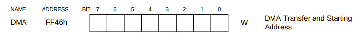
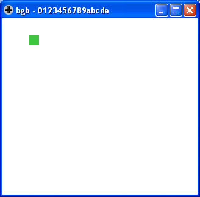

參考資訊：
https://bgb.bircd.org/
https://github.com/gbdev/rgbds
https://github.com/sinamas/gambatte
https://github.com/lancekindle/DMGreport
暫存器

RAM equ $c000
DMA equ $ff46
DMA_CODE equ $ff80
LCDC equ $ff40
LCDCF_OBJ8 equ %00000000
LCDCF_OBJON equ %00000010
IE equ $ffff
IEF_VBLANK equ %00000001
section "vblank", rom0[$0040]
jp DMA_CODE
section "lcdc", rom0[$0048]
reti
section "timer", rom0[$0050]
reti
section "serial", rom0[$0058]
reti
section "joypad", rom0[$0060]
reti
section "entry", rom0[$0100]
nop
jp _start
section "header", rom0[$0104]
db $ce, $ed, $66, $66, $cc, $0d, $00, $0b, $03, $73, $00, $83, $00, $0c, $00, $0d
db $00, $08, $11, $1f, $88, $89, $00, $0e, $dc, $cc, $6e, $e6, $dd, $dd, $d9, $99
db $bb, $bb, $67, $63, $6e, $0e, $ec, $cc, $dd, $dc, $99, $9f, $bb, $b9, $33, $3e
db "0123456789abcde"
db $80
db 0, 0
db 0
db 0
db 0
db 0
db 1
db $33
db 0
db 0
dw 0
_start:
di
ld sp, $ffff
call copy_dma_code
ld a, IEF_VBLANK
ld [IE], a
ei
ld a, [LCDC]
or LCDCF_OBJON
or LCDCF_OBJ8
ld [LCDC], a
ld d, 32
ld bc, tile
ld hl, $8000
copy_tile:
ld a, [bc]
ld [hl+], a
inc bc
dec d
jr nz, copy_tile
ld b, 0
ld hl, color
copy_palette:
ld a, b
ld [$ff6a], a
ld a, [hl]
ld [$ff6b], a
inc hl
inc b
ld a, b
cp 8
jr nz, copy_palette
ld hl, RAM + 0
ld [hl], 30
ld hl, RAM + 1
ld [hl], 30
ld hl, RAM + 2
ld [hl], 1
ld hl, RAM + 3
ld [hl], 0
jp @
dma_code_start:
push af
ld a, RAM / $100
ldh [DMA], a
ld a, $28
wait:
dec a
jr nz, wait
pop af
reti
dma_code_end:
copy_dma_code:
ld de, DMA_CODE
ld hl, dma_code_start
ld bc, dma_code_end - dma_code_start
copy:
inc b
inc c
jr skip
cloop:
ld a, [hl+]
ld [de], a
inc de
skip:
dec c
jr nz, cloop
dec b
jr nz, cloop
ret
color:
dw $7fff
dw $001f
dw $03e0
dw $7c00
tile:
db %00000000
db %00000000
db %00000000
db %00000000
db %00000000
db %00000000
db %00000000
db %00000000
db %00000000
db %00000000
db %00000000
db %00000000
db %00000000
db %00000000
db %00000000
db %00000000
db %00000000
db %11111111
db %00000000
db %11111111
db %00000000
db %11111111
db %00000000
db %11111111
db %00000000
db %11111111
db %00000000
db %11111111
db %00000000
db %11111111
db %00000000
db %11111111
完成
